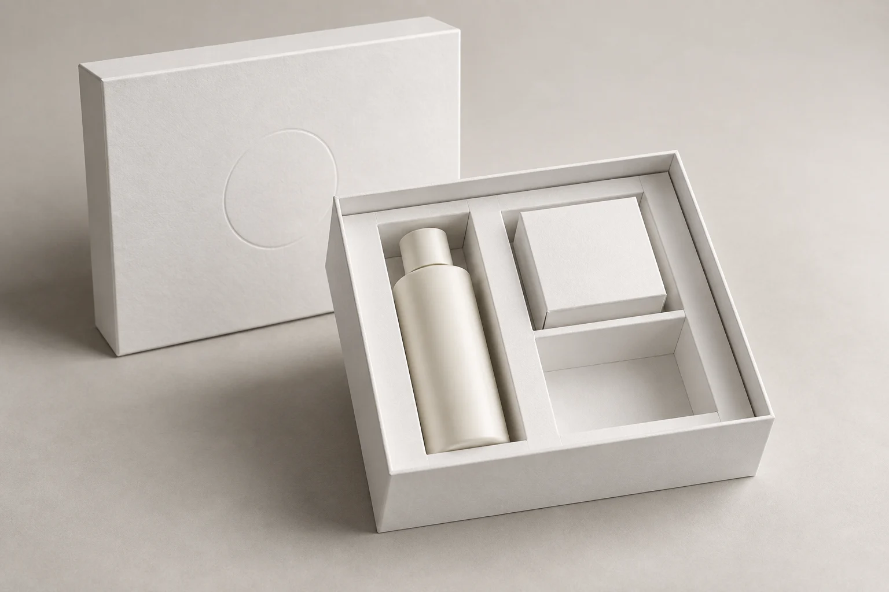
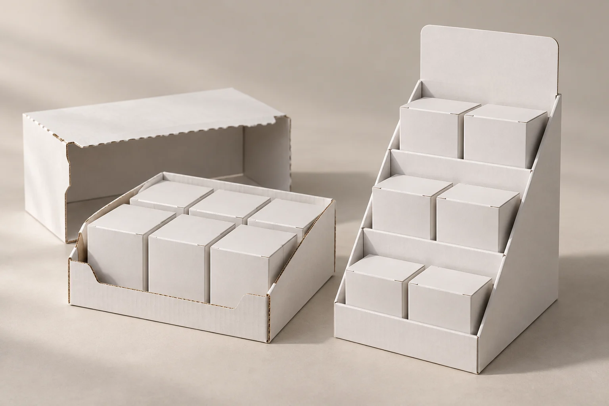
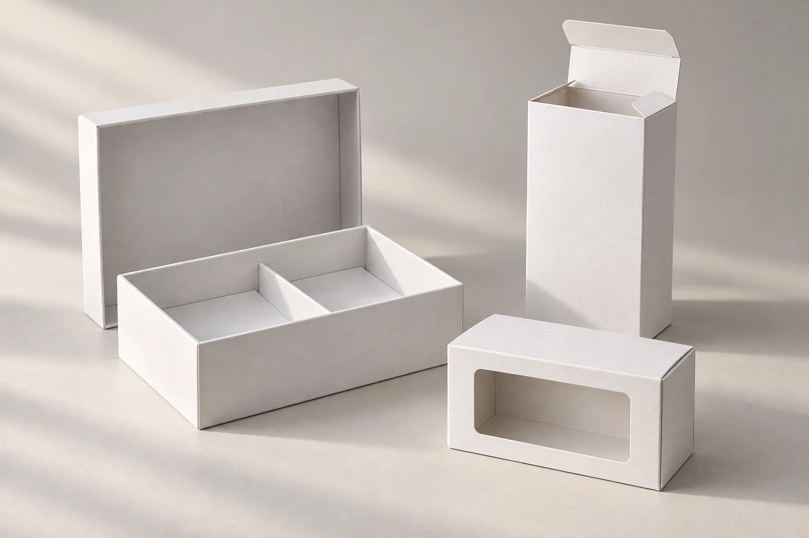
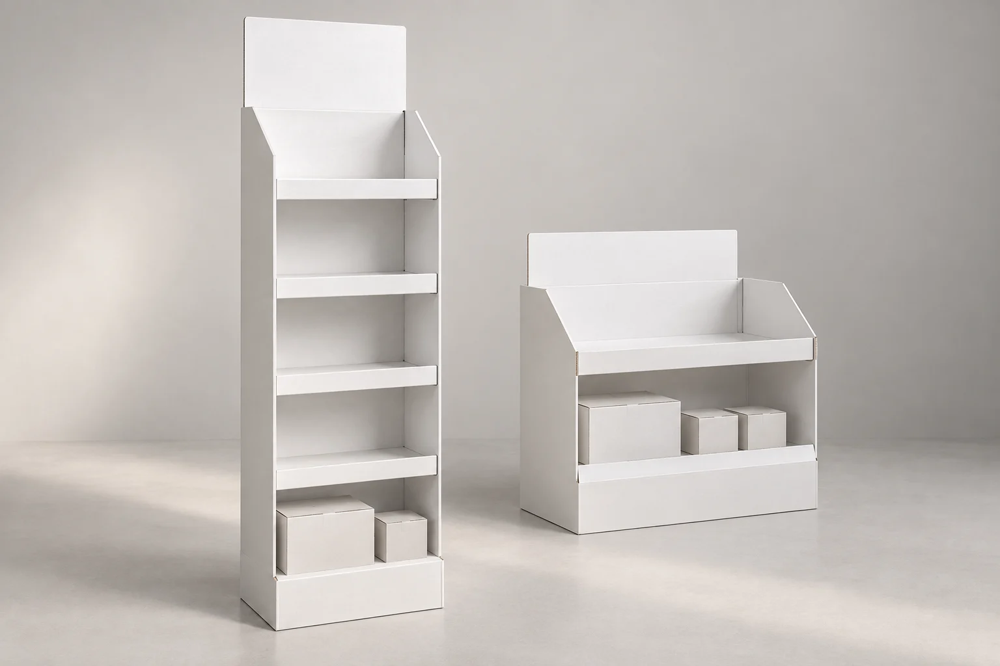
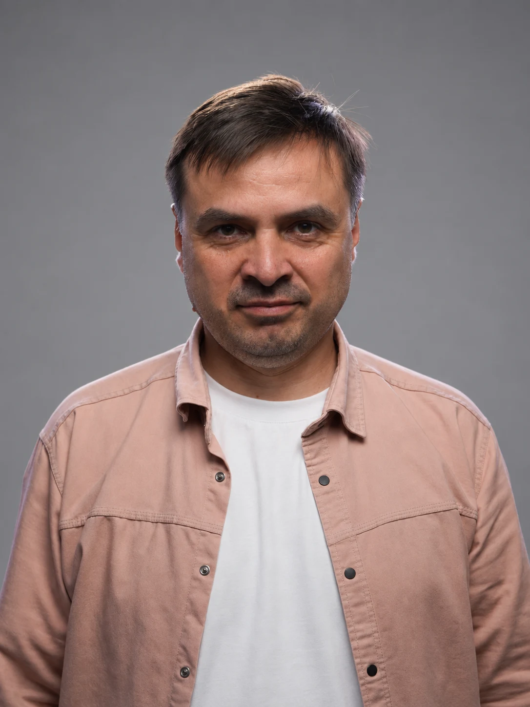

Есть товар, нет конструкции
Помогу определить требования к упаковке или дисплею и организую разработку под размеры и свойства товара.
Упаковка и выкладка товара · для бизнеса
Разработка конструкции, изготовление образца и организация тиража. Помогу пройти путь от идеи до изделия — с подбором производства и контролем исполнения.
Разработку и образец можно заказать отдельно.
Москва и Московская область · можно начать без готового ТЗ

Проверка перед тиражом.
Размеры, посадка товара, сборка.
С чем можно обратиться
Помогу определить требования к упаковке или дисплею и организую разработку под размеры и свойства товара.
Организую изготовление, чтобы проверить посадку товара, сборку и удобство использования до решения о тираже.
Подберу исполнителя под конструкцию, материал, отделку и количество. Уточню состав работ и условия.
Возьму на себя согласования с производством и контроль исполнения по утверждённому образцу и спецификации.
Отдельная услуга
Проверить решение на вашем товаре — перед тем, как заказывать тираж.
Для коробки, ложемента, шоубокса или картонной стойки. Можно обратиться с идеей, фотографией похожего изделия или готовым заданием.
Белый образец помогает проверить конструкцию. Цветной образец, печать и отделку обсуждаем отдельно.
Состав работ, стоимость и сроки согласуем по вашей задаче. Решение о тираже можно принять после образца.
Что нужно изготовить
Для продукта, набора или образцов. Важно не только упаковать, но и точно разместить всё внутри.

Шоубоксы, настольные дисплеи и SRP. Товар удобно привезти, выставить и пополнить.

Складные коробки и жёсткие коробки для наборов. Под размеры товара, с печатью и нужной отделкой.

Напольные и паллетные дисплеи. Разработка под нагрузку, способ сборки и требования магазина.
Белые образцы помогают увидеть конструкцию без брендинга. Это сгенерированные иллюстрации, не портфолио. Для вашего заказа разработаем и согласуем физический образец.
Обсудим оба тиража, материал и комплектацию. Это примеры количества для расчёта — возможность изготовления и условия зависят от изделия.
Из чего складывается цена
Динар ДинмухаметовОдин ответственный за вашу задачу
Уточню требования, организую разработку и образец, согласую работу с производством. Вы знаете, к кому обратиться с вопросом на каждом этапе.
Начните с того, что есть
Для первого разговора достаточно описания задачи. Остальные вводные уточним вместе.
Это отдельная услуга. Обсудим изделие, требования и вид образца. Стоимость и сроки согласуем до начала работы; тираж можно обсудить позже.
Пришлите фотографию товара, размеры и пример того, что нравится. Помогу перевести замысел в требования к изделию.
Разберём конструкцию и то, что нужно сохранить или улучшить. Уточним материалы и организуем новый образец.
Уточним количество, проверим образец, материалы и условия изготовления.
Как проходит работа
Получаю товар или его параметры. Согласуем состав работы: разработка, изготовление образца или подготовка тиража.
Организую разработку и изготовление белого образца. Проверяем размеры, размещение товара и сборку, уточняем необходимые правки.
Подбираем материалы и отделку. Согласуем цветной образец и фиксируем спецификацию изделия.
Разработку и образец можно заказать отдельно. Если нужен тираж, рассчитываю количества по согласованной спецификации и организую изготовление.
Полезное об упаковке
Сначала — изделие
Образец позволяет проверить решение руками: как сидит продукт, открывается крышка и собирается конструкция.
Фиксируем размеры, материал, ложемент, печать и отделку. Расчёт тиража опирается на согласованное изделие — с понятным составом и комплектацией.
Начнём с разговора
Пришлите фото товара, размеры и вашу задачу.
Укажите, нужен образец или тираж. Готовое ТЗ необязательно.
Динар Динмухаметов
Ваш собеседник на всём пути
Москва и Московская область. Работаю с юридическими лицами. Для начала достаточно описания изделия, размеров и количества. Не присылайте лишние персональные данные.